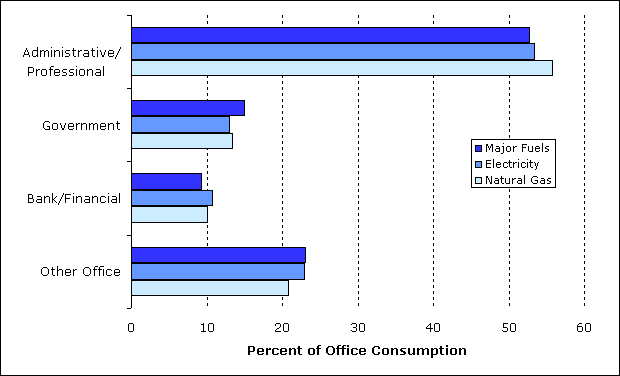
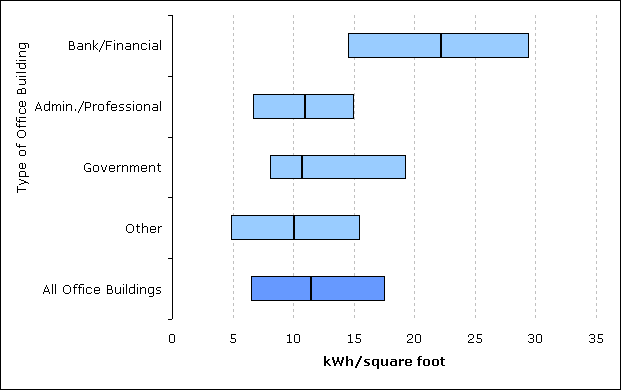
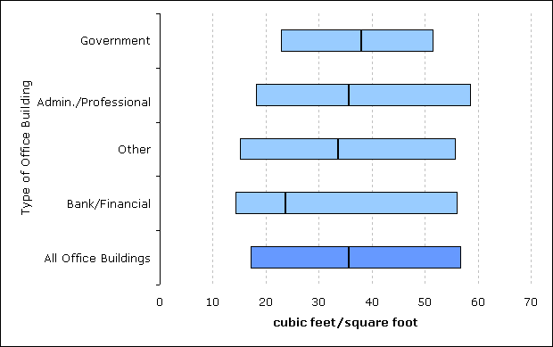

Energy Consumption
Office buildings consumed more than 17 percent of the total energy used by the commercial buildings sector (Table 4). At least half of total energy, electricity, and natural gas consumed by office buildings was consumed by administrative or professional office buildings (Figure 2).
Table 4. Energy Consumed by Office Buildings for Major Fuels, 2003
| All Buildings | Total Energy Consumption (trillion Btu) |
||||||
|---|---|---|---|---|---|---|---|
| Number of Buildings (thousand) |
Total Floorspace (million sq. ft.) |
Sum of Major Fuels |
Electricity | Natural Gas | Fuel Oil | District Heat | |
| All Buildings | 4,859 | 71,658 | 6,523 | 3,559 | 2,100 | 228 | 636 |
| All Non-Mall Buildings | 4,645 | 64,783 | 5,820 | 3,037 | 1,928 | 222 | 634 |
| All Office Buildings | 824 | 12,208 | 1,134 | 719 | 269 | 18 | 128 |
| Type of Office Building | |||||||
| —Administrative/ Professional |
442 | 6,628 | 598 | 384 | 150 | 9 | 55 |
| —Bank/Financial | 104 | 1,101 | 105 | 77 | 27 | Q | N |
| —Government | 84 | 1,549 | 170 | 93 | 36 | Q | Q |
| —Other Office | 194 | 2,930 | 261 | 165 | 56 | 5 | Q |
Q=Data withheld because the Relative Standard Error (RSE) was greater than 50 percent or fewer than 20 buildings were sampled. |
|||||||
Figure 2. Percentage of Energy Consumed in Office Buildings by Type of Office, 2003
Source: Energy Information Administration, 2003 Commercial Buildings Energy Consumption Survey.
Energy consumption per building and per square foot of floorspace varied significantly across the office sub-categories while consumption per employee showed less variation (Table 5). Consumption per square foot of floorspace for sum of major sources was greatest for government buildings.
Table 5. Summary of Consumption for Sum of Major Fuels for Office Buildings, 2003
| All Buildings | Sum of Major Fuel Consumption | ||||||
|---|---|---|---|---|---|---|---|
| Number of Buildings (thousand) |
Total Floorspace (million sq. ft.) |
Floorspace per Building (thousand square feet) |
Total (trillion Btu) |
per Building (million Btu) |
per Square Foot (thousand Btu) |
per Worker (million Btu) |
|
| All Buildings | 4,859 | 71,658 | 14.7 | 6,523 | 1,342 | 91.0 | * |
| All Non-Mall Buildings | 4,645 | 64,783 | 13.9 | 5,820 | 1,253 | 89.8 | 79.9 |
| All Office Buildings | 824 | 12,208 | 14.8 | 1,134 | 1,376 | 92.9 | 40.3 |
| Type of Office Building | |||||||
| —Administrative/ Professional |
442 | 6,628 | 15.0 | 598 | 1,352 | 90.2 | 39.0 |
| —Bank/Financial | 104 | 1,101 | 10.6 | 105 | 1,015 | 95.6 | 45.3 |
| —Government | 84 | 1,549 | 18.4 | 170 | 2,017 | 109.6 | 42.0 |
| —Other Office | 194 | 2,930 | 15.1 | 261 | 1,346 | 89.0 | 40.3 |
* Number of workers not collected for mall buildings. |
|||||||
Tables 6 and 7 show electricity and natural gas intensities and the median, 25th, and 75th percentile building-level intensities. The 25th and 75th percentiles give a sense of the range of intensities for each of the office sub-categories. Figures 3 and 4 display the variation for the two energy sources.
Financial office buildings have the highest median, 25th, and 75th percentile building-level electricity intensities. For natural gas, the picture is less varied. With the exception of the “bank/financial” median value, the median, 25th, and 75th percentile values across office building types were fairly similar.Table 6. Consumption of Electricity for Office Buildings, 2003
| Electricity Consumption | Distribution of Building-Level Intensities (kWh/square foot) |
|||||
|---|---|---|---|---|---|---|
| per Building (thousand kWh) |
per Square Foot (kWh) |
per Worker (thousand kWh) |
25th Percentile |
Median | 75th Percentile |
|
| All Buildings | 226 | 14.9 | * | 3.8 | 8.8 | 18.1 |
All Non-Mall Buildings |
202 | 14.1 | 12.2 | 3.6 | 8.2 | 17.1 |
| All Office Buildings | 256 | 17.3 | 7.5 | 6.5 | 11.5 | 17.6 |
| Type of Office Building | ||||||
| —Administrative/ Professional |
254 | 17.0 | 7.3 | 6.7 | 11.0 | 15.0 |
| —Bank/Financial | 217 | 20.4 | 9.7 | 14.5 | 22.2 | 29.5 |
| —Government | 325 | 17.7 | 6.8 | 8.1 | 10.7 | 19.3 |
| —Other Office | 249 | 16.5 | 7.5 | 4.9 | 10.1 | 15.5 |
* Number of workers not collected for mall buildings. |
||||||
Figure 3. Building-Level Electricity Intensities (25th percentile, median, and 75th percentile) by Type of Office Building, 2003
Source: Energy Information Administration, 2003 Commercial Buildings Energy Consumption Survey.
Table 7. Consumption of Natural Gas for Office Buildings, 2003
| Natural Gas Consumption | Distribution of Building-Level Intensities (cubic feet/square foot) |
|||||
|---|---|---|---|---|---|---|
| per Building (thousand cubic feet) |
per Square Foot (cubic feet) |
per Worker (thousand cubic feet) |
25th Percentile |
Median | 75th Percentile |
|
| All Buildings | 803 | 42.0 | * | 17.9 | 37.4 | 71.0 |
| All Non-Mall Buildings | 782 | 43.0 | 36.0 | 17.6 | 37.1 | 70.9 |
| All Office Buildings | 535 | 31.8 | 13.8 | 17.2 | 35.7 | 56.9 |
| Type of Office Building | ||||||
| —Administrative/ Professional |
538 | 32.1 | 13.4 | 18.2 | 35.6 | 58.8 |
| —Bank/Financial | 435 | 30.1 | 14.4 | 14.3 | 23.7 | 56.2 |
| —Government | 800 | 34.2 | 14.5 | 22.9 | 38.0 | 51.7 |
| —Other Office | 480 | 30.8 | 14.5 | 15.1 | 33.7 | 55.9 |
* Number of workers not collected for mall buildings. |
||||||
Figure 4. Building-Level Natural Gas Intensities (25th percentile, median, and 75th percentile) by Type of Office Building, 2003
Source: Energy Information Administration, 2003 Commercial Buildings Energy Consumption Survey.
Office Buildings
Types of Office Buildings
Energy Consumption
End-Use Equipment
Detailed office tables |
Excel |
PDF |
|---|---|---|
| Table 2. Office Building Sub-Categories, Number of Buildings, 2003 | ||
| Table 3. Office Building Sub-Categories, Floorspace, 2003 | ||
| Note: Excel version includes tab for relative standard errors (RSEs). | ||
| See "What is an RSE?" for additional information. |
Return to: CBECS Home Page
Specific questions may be directed to:
Alan Swenson
Alan Swenson
Phone: (202) 586-1129
FAX: (202) 586-9753
Date released: September, 2010